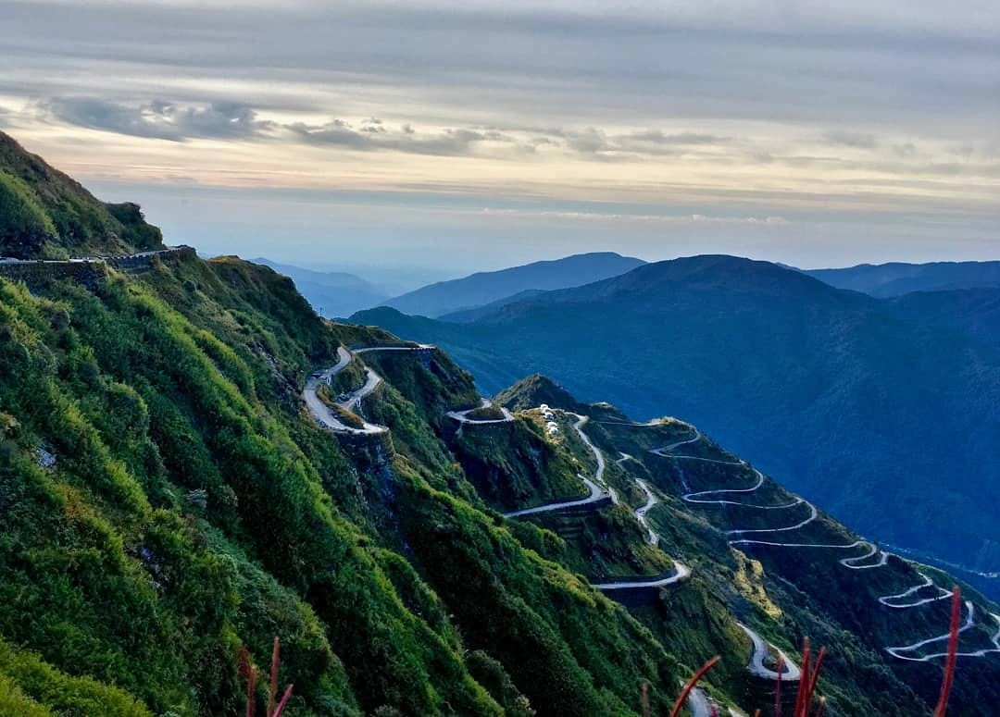
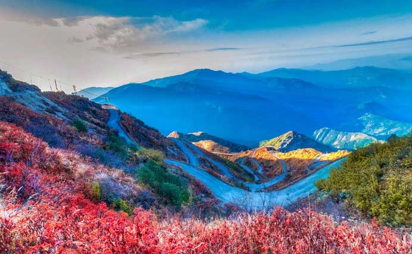
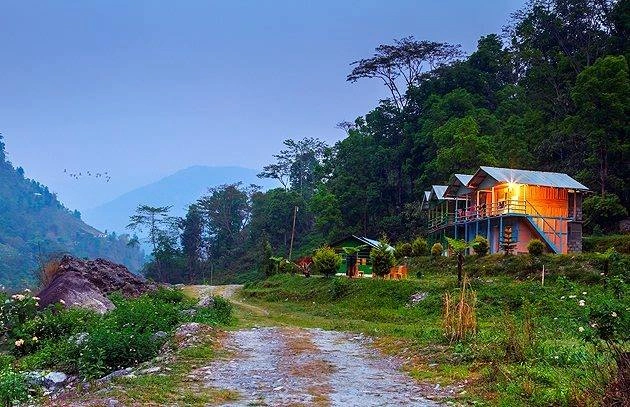
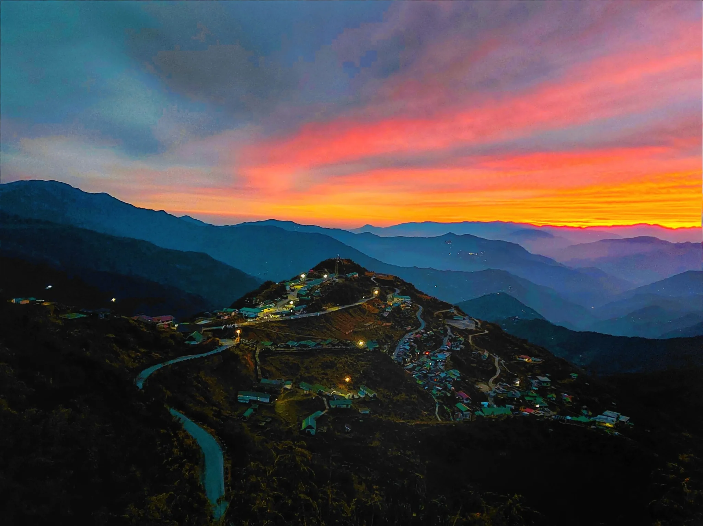
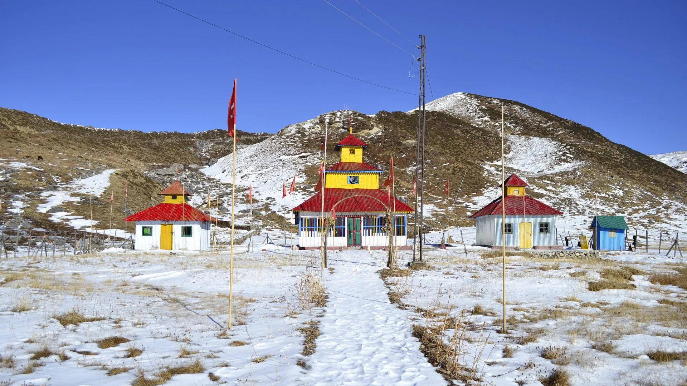

Nestled in the remote mountains of East Sikkim, the historic Silk Route is one of the most breathtaking and offbeat destinations in Northeast India. Surrounded by snow-covered Himalayan peaks, zig-zag mountain roads, alpine valleys, frozen lakes, colorful monasteries, and peaceful villages, the Silk Route offers an unforgettable journey through the Eastern Himalayas. Once an ancient trade route connecting India with Tibet and China, the Old Silk Route has now become a dream destination for nature lovers, road trip enthusiasts, photographers, couples, and adventure travelers. From the dramatic hairpin bends of Zuluk to the snow-covered beauty of Nathang Valley, every part of the Silk Route feels magical and untouched. Whether you are planning a peaceful mountain escape, snowfall tour, photography trip, or an adventurous Sikkim road journey, the Silk Route promises some of the most scenic landscapes in India.
The Silk Route was historically an ancient trade route connecting India with Tibet and China. Traders once used this mountain pathway to transport silk, wool, spices, horses, and various goods across the Himalayan region. The East Sikkim section of the Silk Route played an important role during British India and later became strategically significant due to its proximity to the Indo-China border. Today, the Old Silk Route has transformed into one of the most scenic tourism circuits in Sikkim while still preserving its untouched beauty, mountain culture, and historical charm.
Zuluk is the most famous destination on the Silk Route and is known for its spectacular zig-zag mountain roads and breathtaking Himalayan views. Located at a high altitude, this small mountain village offers peaceful surroundings, chilly weather, cloud-covered valleys, and stunning sunrise experiences. The winding roads of Zuluk are among the most photographed mountain roads in India.


Nathang Valley, also known as the “Ladakh of East India,” is one of the most mesmerizing places on the Silk Route. Surrounded by barren mountains, snow-covered landscapes, and dramatic skies, Nathang Valley looks magical during winter. During snowfall season, the valley transforms into a white wonderland attracting travelers from across India.


Thambi View Point offers one of the most iconic panoramic views of the Silk Route zig-zag roads. Located at a high altitude, the viewpoint becomes especially magical during sunrise when golden sunlight falls over the Himalayan mountains and winding roads. On clear days, travelers can even witness spectacular views of Mount Kanchenjunga.
Kupup Lake, also known as Elephant Lake due to its unique shape, is a stunning high-altitude lake located near the Indo-China border. Surrounded by mountains and cold desert-like landscapes, the lake becomes partially frozen during winter and creates breathtaking scenery.
Baba Mandir is one of the most visited spiritual attractions near the Silk Route. Dedicated to Indian Army soldier Baba Harbhajan Singh, the temple is deeply respected by locals and army personnel. The peaceful surroundings and patriotic atmosphere make it a unique destination in East Sikkim.
Lungthung is another beautiful viewpoint famous for dramatic mountain landscapes and panoramic Himalayan views. Clouds floating through valleys, colorful mountain slopes, and peaceful surroundings make Lungthung one of the most scenic stops along the Silk Route.
Padamchen is a peaceful mountain village surrounded by forests and valleys. Many travelers choose Padamchen for overnight stays because of its quiet atmosphere, beautiful homestays, and relaxing Himalayan environment.
The Silk Route offers different experiences in every season, from lush greenery to snowfall landscapes.
Silk Route is one of the best destinations in East Sikkim for scenic Himalayan adventures and mountain road trips.
The Silk Route offers delicious Sikkimese, Tibetan, and Nepali cuisine served in local homestays and mountain cafés.
Silk Route is well connected by road from Gangtok, NJP Railway Station, and Bagdogra Airport. Most travelers visit through private vehicles or tour packages.
The nearest major railway station is New Jalpaiguri (NJP) in West Bengal.
The nearest airport is Bagdogra Airport near Siliguri.
Planning a Silk Route trip becomes smooth and memorable with Wander & Wonder Travels. Our carefully curated Silk Route packages cover Zuluk, Nathang Valley, Kupup Lake, Gangtok, and scenic East Sikkim destinations.
Why Choose Wander & Wonder Travels?
If you are dreaming of witnessing snow-covered Himalayan landscapes, scenic mountain roads, peaceful valleys, and the untouched beauty of East Sikkim, Wander & Wonder Travels is your perfect travel partner for unforgettable Silk Route adventures.
Explore Silk Route Packages → ```